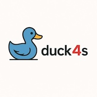

Duck4s: Scala 3 Wrapper for DuckDB
Duck4s is a modern, type-safe Scala 3 wrapper library for DuckDB that provides idiomatic, functional programming-friendly access to DuckDB's analytical database capabilities through its Java JDBC client.
Key Features
- Type Safety: Comprehensive error handling with
Either[DuckDBError, T]types - Resource Management: Automatic resource cleanup with
withConnection,withPreparedStatement, andwithBatchmethods - Functional Programming: Designed for composition with for-comprehensions and functional patterns
- Modern Scala 3: Utilizes Scala 3 features like extension methods, given instances, and braceless syntax
- Batch Operations: Efficient type-safe batch processing with type classes
- Transaction Support: First-class transaction management with automatic rollback
- Cross-Platform: Supports Scala 3.3.6 (LTS) and 3.7.0
Quick Example
import com.softinio.duck4s.*
import com.softinio.duck4s.algebra.*
// Simple query execution
val result = DuckDBConnection.withConnection() { conn =>
for
_ <- conn.executeUpdate("CREATE TABLE users (id INTEGER, name VARCHAR)")
_ <- conn.executeUpdate("INSERT INTO users VALUES (1, 'Alice'), (2, 'Bob')")
rs <- conn.executeQuery("SELECT * FROM users ORDER BY id")
yield
while rs.next() do
println(s"${rs.getInt("id")}: ${rs.getString("name")}")
rs.close()
}
Documentation
- Getting Started - Learn the basics of duck4s
- API Documentation - Complete API reference
In this article